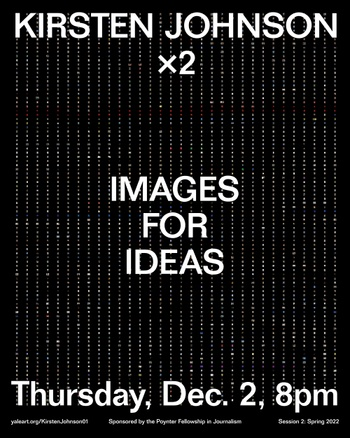

This website exists as an ongoing collaborative experiment in digital publishing and information sharing. Because this website functions as a wiki, all members of the School of Art community—graduate students, faculty, staff, and alums—have the ability to add new content and pages, and to edit most of the site’s existing content.
Content is the property of its various authors. When you contribute to this site, you agree to abide by Yale University academic and network use policy, and to act as a responsible member of our community.
Content is the property of its various authors. When you contribute to this site, you agree to abide by Yale University academic and network use policy, and to act as a responsible member of our community.
The Yale School of Art is a graduate school that confers MFAs in Graphic Design, Painting/Printmaking, Photography, and Sculpture; and offers undergraduate-level art courses to Yale College students. Our website exists as an ongoing collaborative experiment in digital publishing and information sharing. It functions as a wiki—all members of the School of Art community have the ability to add new, and edit most existing content.
Events This Week:

Taeyoon Choi: Lichenous Networks
Tuesday, November 30, 2021 at 6:30PM EST
Free & open to the public.
The Graphic Design department invites you to a virtual public lecture with Taeyoon Choi. Taeyoon Choi makes drawings, computer programs and performance. He co-founded the School for Poetic Computation in New York City. Now, he lives in South Korea.
The Paul Rand Lecture Series is made possible through the generosity of the Paul Rand (’85 M.A.H.) Annual Lectureship in Design Fund.
The Paul Rand Lecture Series is made possible through the generosity of the Paul Rand (’85 M.A.H.) Annual Lectureship in Design Fund.

Kirsten Johnson: Images for Ideas
Thursday, December 2, 2021 at 8PM EST
Open to the Yale community.
Documentarian/cinematographer Kirsten Johnson (Cameraperson, Dick Johnson is Dead) leads a two-part collaborative lecture/workshop event that will provide both a window into and a participatory project related to her unique and evolving documentary methodologies.
The first session, Images for Ideas, will take place via Zoom on Thursday Dec. 2nd @ 8pm. The second part of the series will be held in the spring semester 2022. Both sessions will utilize submissions by School of Art students as a springboard for a discussion of images as conceptual groundwork in pre-production and intuitive framing device in post-production. The two-part event is open to the University.
The first session, Images for Ideas, will take place via Zoom on Thursday Dec. 2nd @ 8pm. The second part of the series will be held in the spring semester 2022. Both sessions will utilize submissions by School of Art students as a springboard for a discussion of images as conceptual groundwork in pre-production and intuitive framing device in post-production. The two-part event is open to the University.